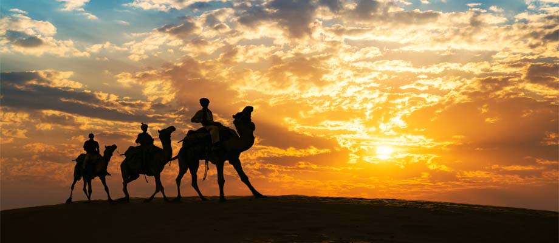

Jodhpur Jaisalmer Desert Triangle Tour Package

Overview
Package Name: Jodhpur Jaisalmer Desert Triangle Tour Package
Duration:6 Nights/7 Days
Price(per person on twin sharing):Rs.22000/-
Rating:3.5
Itinerary Highlights
Day 1: Arrival in Jodhpur
Meals: Dinner only
Our Jodhpur & Jaisalmer tour Package will start off from Jodhpur Airport / Railway Station. Meet our representative there and transfer to the hotel. Rest of the day free for your independent activities. Overnight stay at Hotel.
Day 2: Jodhpur Sightseeing
Meals: Breakfast & Dinner
Today after breakfast have Full Day City Tour Covering Clock Tower, Mehrangarh Fort ,Jaswant Thada, Mandor Garden, Mahamandir & Ummaid Bhawan & Balsamand Lake .Overnight stay at hotel.
Day 3: Jodhpur-Jaisalmer(295 kms)
Meals: Breakfast & Dinner
After breakfast, check out from the hotel and depart for Jaisalmer from Jodhpur. On arrival in Jaisalmer, Check into the hotel. Evening explore local market by own .Overnight stay at hotel.
Day 4: Jaisalmer Sightseeing
Meals: Breakfast & Dinner
After breakfast at 10 am, have Full Day City Tour Of Jaisalmer- Cover Patwaon-Ki-Haveli, Sonar Quila, Gadisar Lake, Bada Bagh, & Jain Temples . At 6 pm drive to Sam Sand Dunes In Thar Desert. Overnight Stay in Hotel.
Day 5: Jaisalmer-Bikaner(330 kms)
Meals: Breakfast & Dinner
After breakfast, check out from the hotel & drive to Bikaner. Arrive & transfer to the hotel. Rest of the day free to your leisure activities. Overnight Stay at the hotel.
Day 6: Bikaner Sightseeing
Meals: Breakfast & Dinner
After breakfast visit Junagarh Fort, Karni Mata Temple, Lalgarh Fort, Bhandasar Jain Temples, Shri Laxmi Nath Temple & National Camel Breeding Farm. In afternoon return to hotel. Overnight Stay at hotel.
Day 7: Departure
Meals: Breakfast only
After breakfast check out from the hotel and then you will be dropped at Bikaner Railway Station for your onwards journey with sweet memories in your heart.
Inclusion
- Deluxe Room Accomodations
- Pick and drop from Railway Station/Airport with driver Allowance & Fuel
- Toll Tax, State Permit tax & parking
- Transportation by Car
- All sightseeing by Transportation Car
Exclusion
- Meals & drinks other than specified in inclusions
- Expenses of personal nature such as laundry,tips,telephone calls,etc
- 5% GST Extra
- Any adventure activity
- Any air/train/bus fare, Monument or Fort Entrance fee/Camera fees
Transport Information
Car from Jodhpur to Jodhpur.
Payment
For all the services contracted, certain advance payment should be made to hold the booking on the confirmed basis and the remaining amount should be paid definitely before the commencement of the services.
Management holds the right to decide upon the amount to be paid as advance payment, based on the nature of the service & the time left for the commencement of the service.
Apart from above in some cases like Special Train Journeys, hotels or resorts bookings during the peak season (X-Mas, New Year), full payment is required to be sent in advance.
Cancellation & Refund Policy
In the event of cancellation of tour/travel services due to any avoidable/unavoidable reason/s, we must be notified of the same in writing. Cancellation charges will be effective from the date we receive advice in writing, and cancellation charges would be as follows:
- 45 days prior to arrival: 10% of the Tour/service cost
- 15 days prior to arrival: 25% of the Tour/service cost
- 07 days prior to arrival: 50% of the Tour/service cost
- 48 hours prior to arrival OR No Show: No Refund
Note: Written cancellation will accept on all working days, except Sunday, Any cancellation sent on Sunday's will be considered on next working day (Monday).
For the X-mas and new year period from 20 Dec to 05 Jan the payment is non-refundable. In case you cancel the trip after commencement, the refund would be restricted to a limited amount only which too would depend on the amount that we would be able to recover from the hoteliers/ contractors we patronize. For unused hotel accommodation, chartered transportation & missed meals etc. we do not bear any responsibility to refund.
Additional Information
For all the services contracted, certain advance payment should be made to hold the booking on the confirmed basis and the remaining amount should be paid definitely before the commencement of the services.
Management holds the right to decide upon the amount to be paid as advance payment, based on the nature of the service & the time left for the commencement of the service.
Apart from above in some cases like Special Train Journeys, hotels or resorts bookings during the peak season (X-Mas, New Year), full payment is required to be sent in advance.